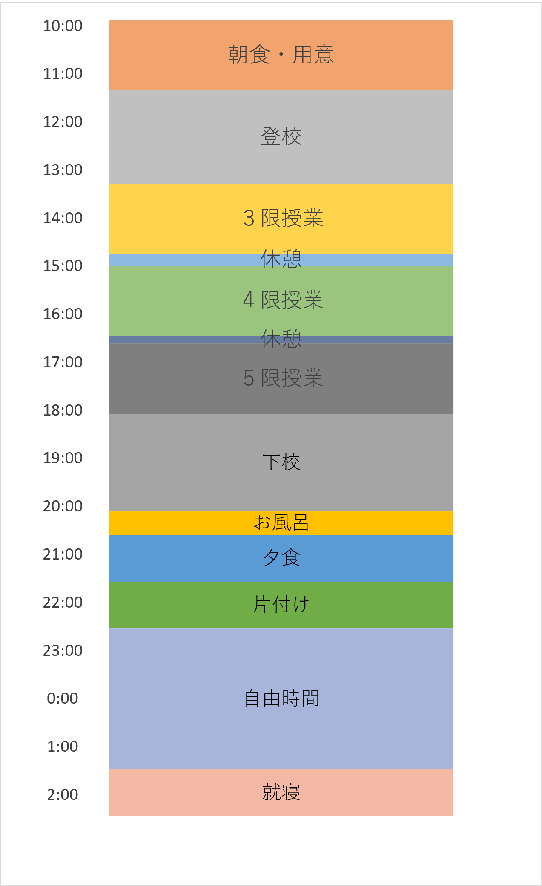

経営学部生の1日
1年生 授業があるときのスケジュール

T.Hさん
実家
1年生 授業がないときのスケジュール
T.Hさん
実家
私は基本的にアルバイトに行って、終わったら友達とご飯を食べに行っていました。
大学生になってから夜更かしが増えちゃいました(;ﾟロﾟ)
アルバイトがない日は、友達とあそびに行ったり、TOEICの勉強をしていました。
学校に行かない分、何かしたいと思い勉学に励んでいました！！
2年生 授業があるときのスケジュール
O.Sさん
実家

僕は実家通いで、片道一時間半ほどかかっていたので授業を見越して早めに家を出なければいけませんでした！
また、教員になるための教職課程の授業を履修していたため、5限まで授業を受けている日が多かったです！
2年生 授業がないときのスケジュール
O.Sさん
実家
休みの日はほとんどアルバイトに費やしていました！大学生は何かとお金がかかるので、アルバイト必須です！
3年生 授業があるときのスケジュール
K.Tさん
下宿
私は朝から働けるアルバイトをしており、授業が始まる直前までアルバイトをしていました！
授業が終わってからもアルバイトをしており、平日は授業かバイトしかしていませんでした！
3年生 授業がないときのスケジュール
K.Tさん
下宿
平日はアルバイトや授業に時間を費やしているため、休みの日は趣味のゲームをずっとしています！
必要最低限だけの生活をし、それ以外はずっと座っています！こうした時間の使い方ができるのも、大学生の良いところだと思います！
私は午前中にリアルタイムの授業がありました。 午後は基本的にオンデマンドの授業を見たり課題をしてから、アルバイトに行ってました。
対面授業はコロナの影響で前期はなく、後期から週1か2でやっと大学に行くようになりました(T-T)
そのため、平日にもアルバイトをばりばりしていました！！